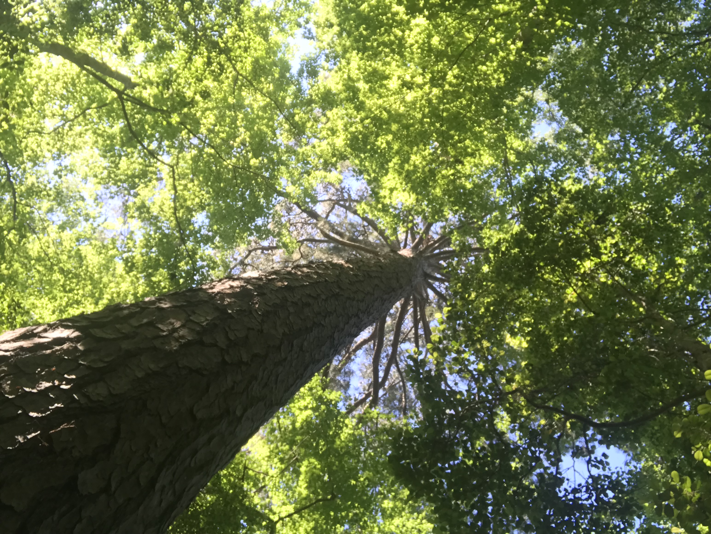

Student as Texas A&M University
Aspiring Software Engineer
From a young age, I had a passion for technology: a belief in it as the future. Learning about the world of computer science fascinated me. I love the critical thinking and problem solving behind each computing task.
This passion for technology and love for computer science brought me to Texas A&M where I am currently enrolled in the Engineering Honors program, seeking to earn my Bachelor's degree in computer science. I hope to use the resources I learn and the experience I gain from courses and projects to become a software engineer.

Download My Resume
With my love for technology, comes my love for coding. Whether it's app development or competetive programming, I enjoy the critical thinking required to solve the coding problems at hand.
In high school, I participated in the computer science club, learning complex algorithms and thoeries for competetive programming. Using the things I learned, I competed in several programming competitions over the course of high school, even walking away with some medals for placing top 10, top 5.

With my love for technology, comes my love for gaming. I like gaming for not only its complexity in analytical thinking as well as hand-eye coordination but also as a pastime to enjoy with friends
I'm willing to play all sorts of video games: FPS (Rainbow 6 siege, Valorant, Apex Legends), MOBA (League of Legends), open-world sandbox (Minecraft), etc.

With my love for technology, comes...that doesn't really work in this case. Anyways, I have always loved playing sports ever since I was a little kid. I've played pretty much every single popular sport in some form or another. I played 10 years of basketball, 2 years of baseball, won a couple of table tennis tournaments, and more.
Now I mostly play volleyball with a side of tennis. I also started to work out and focus on my own health.

Some of My Projects (WIP)